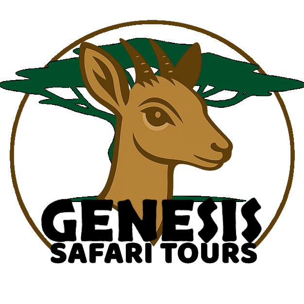

Genesis Safari Tours was founded with a clear purpose: to bring consistency, integrity, and professionalism to Tanzania’s safari transport experience. What began as a small Arusha-based workshop has grown into a fully integrated operation where every vehicle, every guide, and every journey is shaped by our commitment to excellence.
By owning our workshop and managing our fleet from the ground up, we ensure that every guest experiences reliability, safety, and comfort—without compromise. Our mission is simple: deliver a safari experience worthy of the landscapes we explore.
Our mascot, the Genesis Dik-Dik, represents the quiet beauty and understated elegance of the Tanzanian wilderness. Though small, the dik-dik is one of the most alert, agile, and resilient animals on the savannah—qualities that reflect how we operate as a company.
The dik-dik is known for its awareness and precision, traits that mirror our commitment to detail in every journey we prepare. Just as this remarkable creature navigates the wild with care and intention, we navigate every aspect of your safari experience with the same level of attention.
Choosing the dik-dik as our emblem is our way of honoring the subtle, often overlooked wonders of the bush. It reminds us—and our guests—that true excellence doesn’t need to roar; sometimes it simply moves with quiet confidence.
Genesis Safari Tours was built to solve the inconsistency of the Tanzanian safari circuit. We closed the gap by taking full control of the supply chain—owning the workshop and leading the team that makes it possible.
We believe that luxury hospitality deserves a transport partner that mirrors its excellence. This is why every vehicle undergoes a 50-point inspection in our Arusha facility before every departure.

"We provide more than a drive; we provide a bridge to the wild, managed with the transparency and ethical rigor that our workers and guests deserve."